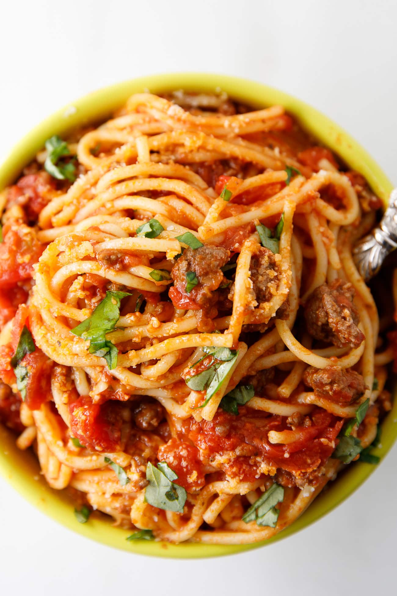

One-Pot Spaghetti

My variation of an old Southern Living recipe -
a double recipe, will fill a Dutch oven and make
plenty for an extended family dinner.
Ingredients
- 1 pound lean ground beef
- 1 large onion, chopped
- 2 cloves garlic, minced
- 1 can tomato sauce
- 1 can petite diced tomatoes
- 2 cups water
- 1 tablespoon chili powder
- 1 teaspoon dried oregano
- 1 teaspoon ground black pepper
- 7 ounces whole wheat spaghetti
- ¼ cup grated Parmesan cheese, or to taste (Optional)
Steps
- Heat a Dutch oven over medium-high heat. Cook and stir
ground beef, onion, and garlic until beef is browned and
crumbly and onion is translucent, 5 to 7 minutes. Drain
and discard excess grease.
- Stir in tomato sauce, diced tomatoes, water, chili powder,
oregano, and black pepper. Bring to a boil. Cover, reduce heat,
and let simmer, stirring often, for about 30 minutes.
- Break spaghetti into thirds and add to the pot; cover and simmer,
stirring often, until pasta is tender, about 20 minutes.
Serve topped with Parmesan cheese.
- Eat it up!! Hope you enjoy 🍝